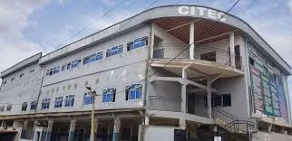

CITEC HITM
Address:
CITEC Higher Institute of Technology and Management (HITM)
Shell Nsimeyong, Yaoundé, CM.
Centre Region, Cameroon
Phone: +237 655 141 271
Email: info@citechitm.com
School Image :

Administrative Staff:
- Cordinator: Mr. KUMJI CLETUS FONJI
- Registrar: Mr. ATABONG
- Accountant: Miss. Nozie Sandrine
- IT Manager: Mr. ELIAS NGUGAP
- Administrative A.Mr.Elonje Judith
- Academic Dean: Miss.Nchinda Therese
- Sectory :Miss.Ayuk Marie
- Sectory : Miss Asongawe Cawedoline
- Academic Vice Dean :Miss.kelly fri
- P.O.R :Mr .Akuma Zama
- C.OC : Mr Asongwe Clive